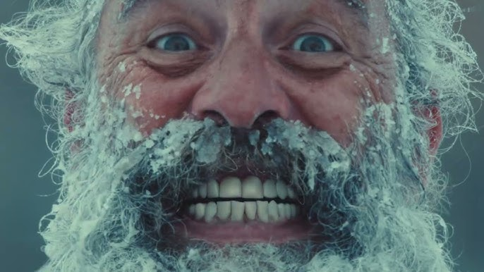

Columbia have always been known for their bold advertising - first pioneered by Gert Boyle putting her own son through stunts. That’s what Columbia latest campaign ‘Engineered For Whatever’ wanted to recapture. During the animatic phase back in late 2024 I had recommended utilising generative AI within a animatic type film to help sell in the idea of stunts. These films were created and presented at a brand day as a ‘what’s coming’ type message to shareholders. Turns out it went down well as all stunt films were made. Then in a full circle producer moment, I was asked to post-produce the real campaign. Working closely with brilliant team at adam&eveDDB led by Charlotte Ellison and the talented guys at Framestore the campaign came to life.

The social films were directed by the talented SILENCE, edited in-house by Darnell and crafted loving by Reanne (who also makes a rather lovely appearance). During the campaign I oversaw the entirety of the post-production of this campaign including edit, sound, grade & delivery.
Agency: adam&eveDDB
Creatives: Will & James + Ben & Mike
Social Creative: Reanne Whittaker
Editor: Darnell Depradine
Director: Silence
Production: Charlotte Ellison
Post-Production: Richard Bailey
Account Team: Flora Hopewell